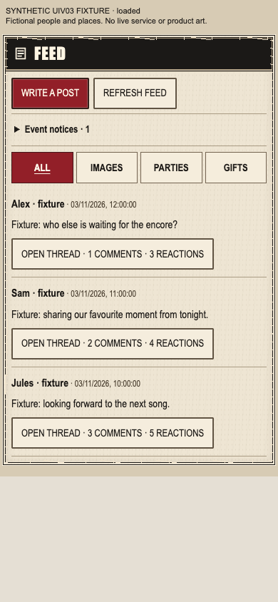
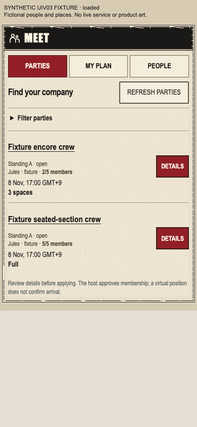
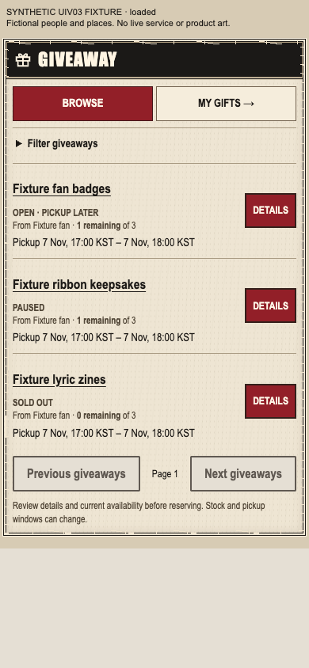

Reference is the original full ten-screen image, unchanged. Compare FEED, MEET and GIVEAWAY in its lower row with the actual 390px components. Black window chrome, ivory frame, red actions, condensed headings and dense public information are adopted. No reference art was extracted. Missing qualified avatar/gift media is deliberately absent. Details precedes approval/reservation; visual adoption does not certify live behavior.



